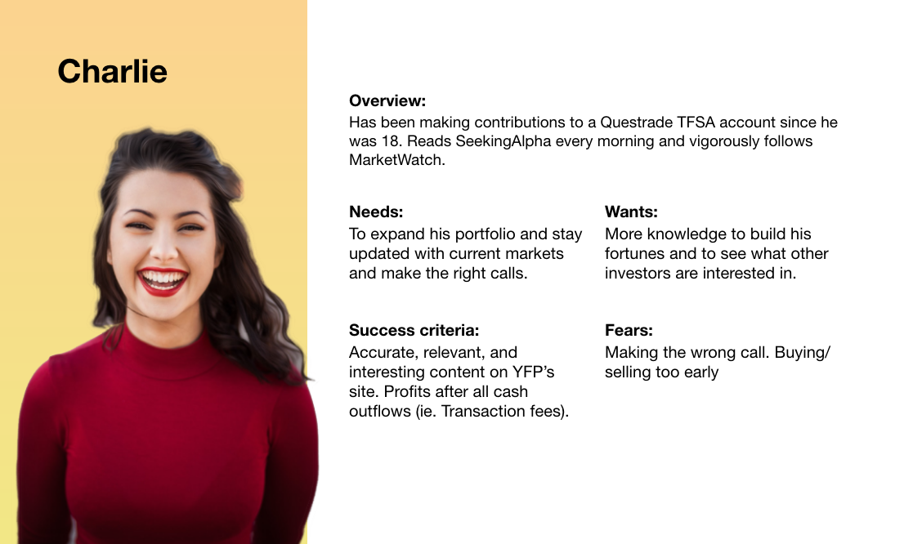
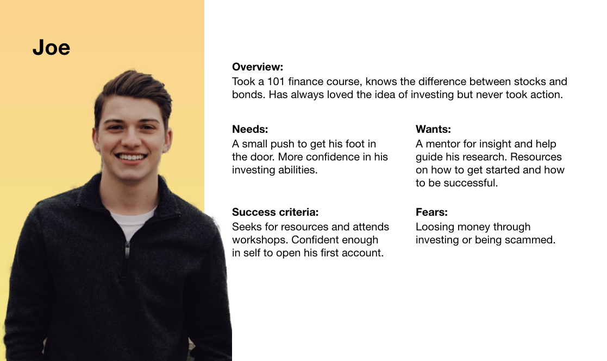
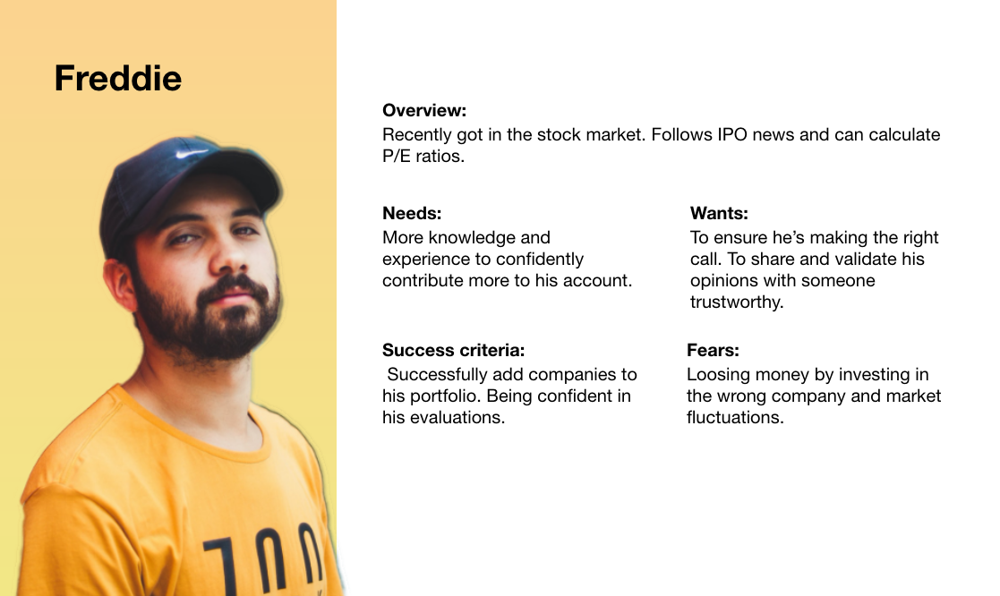
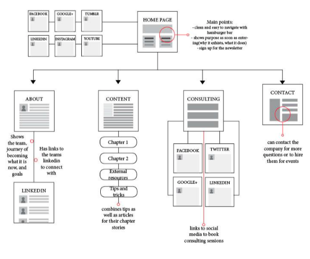

The problem
Young adults lack financial education
More than three-quarters of students (approx. 76%) report that they wish they had more help preparing for
their personal finances. Young Funds Program (YFP for short) is a student-run initiative aimed towards
developing financial literacy, specifically investing experience, in young adults.
To get a better understanding of exactly who we’re designing for, I interviewed and
complied data on my friends. I wanted to get insight on what would they want to see based on their
current level of financial literacy.
The audience:
The experienced
The audience:
Just getting started
The audience:
The curious
Website critique:
Interview methodology
We timed how long users spent on each page as, according to HubSpot, young adults typically spend less than 15-seconds on a website. When interviewees went through the site, we asked questions such as:
- What’s your next step from here?
- What were you hoping to get from this page?
- Is there anything that stands out to you?
- Did you learn anything from this page?
Website critique:
Identifying pain points
After individually critiquing the website, we asked two from each audience segment for their opinion as well. We concluded the main pain points to be:
Pain point 1:
Looks outdated
Screencapture of the current landing page.
Note the unbalanced margins and inconsistent design choices.
Pain point 2:
Unorganized content
Pain point 3:
Navigation difficulties
Duplication of nested navigation menu in the footer
Our task:
Understanding YFP's business goals
Our goal was to present a redesign of the current YFP website, with regards to
their three primary goals.
After speaking iwth Travis, we sorted our findings into 3 categories. For each goal, we brainstormed follow-up questions on why that goal matters to both the audience and YFP, benchmarking how is it currently being achieved, and how it can be improved.
Categorizing YFP's 3 primary goals.
Information architecture:
Site map
The first step was to produce a sitemap, targeting pain points #1 and #2. The goal was to map out the information architecture and how to guide user flow.
Breakdown of the information architecture
Wireframes pt.1:
Individual ideation
We individually developed low-fidelity wireframes for each page. The challenge was how to create
an improved platform that brings value to all three audience segments, while keeping in mind of
YFP’s goals.
To remain within the 15 second metric and using findings from interviews, I designed a landing
page that shows a high-level overview of everything YFP encompasses.

First iteration of low-fidelity wireframes
Interviewees were interested in
the offerings (Goal #2) and the success metrics, which boosts accountability and thus
increases the likelihood of user engagement (Goal #1).
Interviews showed users were most interested in what the ‘Contents’ page offered,
therefore a CTA to that page was added.
To increase user engagement (Goal #1) a CTA to the ‘Contact Us’ page was added at
the
bottom. This
also prevents the user experience from ending awkwardly with the user being
confused with what to do next.
Findings from user interviews for Homepage
Wireframes pt.2:
Wireframing as a group
As a group, we combined our designs to produce two iterations and conducted 4 rounds of A/B testing.
Wireframe A

High-fidelity wireframe for A/B testing
Wireframe B

High-fidelity wireframe for A/B testing